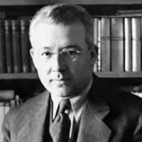
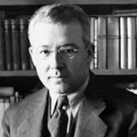

Kürk Mantolu Madonna Kitap Açıklaması
Romanın baş karakterleri, Yahudi asıllı Alman bir kadın olan Maria Puder ve Havranlı
Raif Efendi'dir. Raif Efendi içine kapanık, melankolik, sessiz ve dış dünyaya pek uyum sağlayamamış bir
karakterdir. Hayatı boyunca birçok şeye boyun eğmiş, haksızlığa uğradığında bile buna karşı koyamamıştır.
Sevmediği bir kadınla evlenmiş, çocukları olmuştur; bir ailesi vardır. Kendi hayatına kendisi yön verememiş,
başkalarının istediği bir insan olarak hayatını sürdürmüştür. Hayatında gerçekten yaşadığını hissettiği sadece
bir anısı olmuş ve bunu günlüğüne aktarmıştır.
Raif Efendi, yirmili yaşlarında babasının isteği üzerine gittiği Berlin'de, sanata
olan ilgisi sayesinde bir sanat galerisine gider. Galerideki tablolar arasında gezindiği sırada bir sanatçının
otoportresini görür ve tablodaki kadını hiç tanımamasına rağmen platonik olarak ona âşık olur. Tablo, onda daha
önce hiç hissetmediği duygular uyandırır. Raif tablodaki portrenin, Rönesans ressamı Andrea del Sarto tarafından
yapılmış "Madonna delle Arpie" isimli tablodaki Meryem Ana (Madonna) portresine benzetir. Tabloya o kadar hayran
olur ki, fırsat buldukça tabloyu görmeye gelir; fakat başka gözlerin onu takip ettiğini fark etmez. Artık ritüel
hâlini alan bu tabloyu seyretme seanslarından birinde bir kadın onun yanına gelir. Bu kadın, tablonun sahibi
olan sanatçı Maria Puder'dir. Maria, Raif'in tabloya olan hayranlığının farkındadır. Raif ise başta onun
kendisiyle alay eden biri olduğunu düşünür. Tablonun sahibi ile konuştuğunu öğrenince ise, dünyası bir daha geri
dönüşü olmayacak şekilde değişir.
Maria'nın karakteri Raif'e göre daha dominanttır. Kendisinin bir erkek gibi özgür
yetiştiğini, canı ne isterse onu yaptığını anlatır. Hatta Raif'i de çok naif bulduğunu dile getirir. İkisi bu
özellikleri sayesinde birbirlerini tamamlarlar ve aralarında uzun süren bir arkadaşlık başlar. Raif, Maria'yı
çok sevmektedir; fakat Maria'nın kendisine olan hislerinden pek emin olamaz. Yine de onun her istediğini yapmaya
çalışır. İkisi beraber rüya gibi güzel günler geçirirler.
Bir gün Raif, babasının öldüğü haberini alır. Türkiye'ye, Havran'a dönme kararı alır.
Maria ile burada mektuplaşmaya devam edecektir. Fakat aralarındaki birkaç mektuplaşmadan sonra Maria'nın
mektupları kesilir. Raif bunu hayra yormaz ve Maria'nın kendisinden sıkıldığını, vazgeçtiğini düşünür. Raif'in
asla bitmeyecek olan kasvetli günleri işte burada başlar. Sevmediği bir kadınla evlenir.
Raif, mektupların kesilmesinden yaklaşık on yıl sonra, Maria'nın bir akrabasını
Ankara'da görür. Ondan, Maria'nın kendilerine bir Türkten hamile olduğunu söylediğini ama ismini vermediğini
öğrenir. Ayrıca Maria'nın doğum sırasında fenalaştığını, komaya girdiğini ve bir hafta sonra koma hâlinde iken
öldüğünü büyük bir üzüntüyle öğrenir. Üstelik Maria'nın mektuplarında sadece "iyi haber" olarak nitelendirdiği
gerçeği de o anda öğrenir: On yıl önce Maria, Raif'ten olma kız çocuklarını dünyaya getirdikten bir hafta sonra
koma hâlinde ölmüştür.
Raif Efendi, ölümünün yaklaştığını anladığında bu güzel günleri kaydettiği defterinin
yakılmasını genç bir iş arkadaşından rica eder. Genç iş arkadaşı da Raif Efendi ile ilgili bu gizemi çözmek ve
onu daha yakından tanıyabilmek için defterini okur.